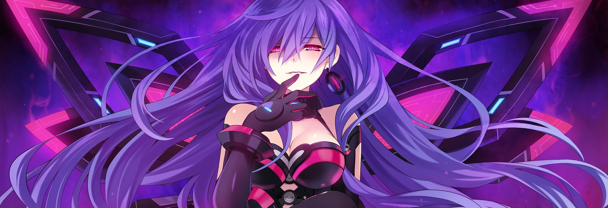

Plutia
Iris Heart
"Yay! I get to go out with everyone!"
Profile
The CPU of Ultra Dimension's Planeptune, and Neptune's cross-dimensional counterpart! She's practically Nep's cousin!
As far as fighting goes, Plutia smacks mean bad guys with her assortment of plushies! Those things hurt a lot, by the way. It's almost as if she stuffed 'em with rocks. . .
Forms
Older Form
No pic. Sorry. :(
Just like Neptune, Plutia can tap into an Older Form anytime she likes!
She's way less childish in this form, and she's less sleepy, too. All that blast-processing technology's gotta do something, right?
She keeps her Human Form's. . . decency, but she's got the rockin' good looks and brains of her Goddess Form!
In her Older Form, Plutia now has a scythe as her main weapon. She does still keep some plushies on hand, though. Y'know, just in case.
Iris Heart
Plutia's Goddess Form, Iris Heart! If you encounter her, and you're not in her good books, best run for the hills!
She's suuuper sadistic in this form, and if she catches you, you'd better be in for a world of pain!
Buuut, she ain't all that mean. If you're someone she cares about, she'll drop everything to protect you!
And weapons? Well, no more of that plushie stuff! If you're up against Iris Heart, prepare to be thrashed wildly by her super spiky whip! She can grab enemies in a chokehold from a distance and give 'em a good whipping all over!
Unique Abilities
Nothing much yet. I might come up with something down the line.